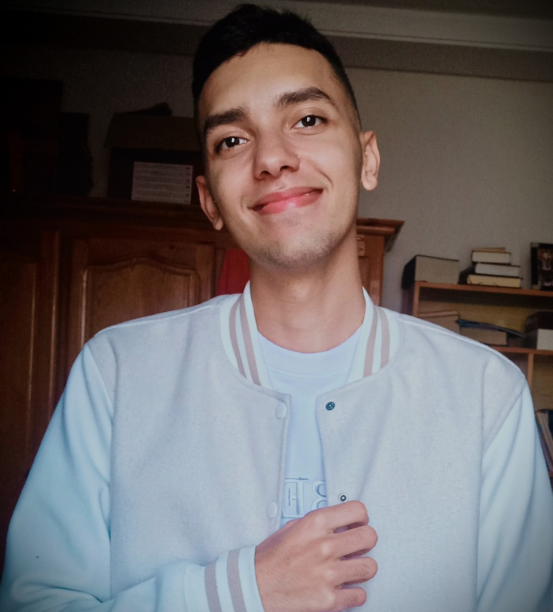

Online Resume

Summary:
I'm trying to develop myself at Web Development in order to show hiers what I'm capable of.
Education:
- From 2016 to 2021: Studied in "La Fontaine" High School located in Fkih Ben Saleh city, Morocco.
- From 2021 to 2022: Studied in "Akensous" High School loccated in Essaouira,Morocco.
- Had the Baccalaureat certificate
- From 2022 to 2023: I'm currently studying at EST (Ecole Supérieur de Téchnologie) located in Elghazoua,Morocco.
Work Experience:
I'm currently having my first Internship at the airport of Essaouira-Mogador under the supervision of its director who had so much experience at Web Development and which it can help me create a website that it related to the theme of travelling, passengers..
I think that would be a great experience to take a look closer to the work industry and see ho it looks like.
Skills:
As skills I might say that I'm :
- Good at communicating.
- Capable of doing a lot of tasks.
- Have a long endurence when it comes to work.
Hobbies
Contact Me